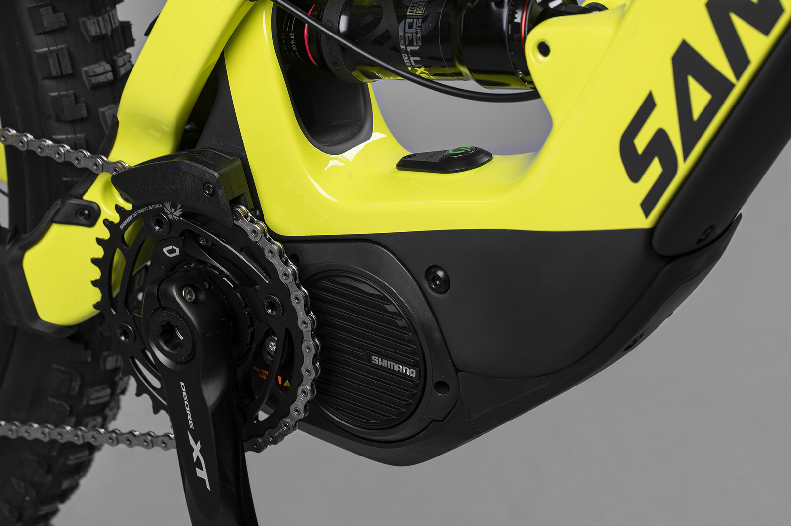
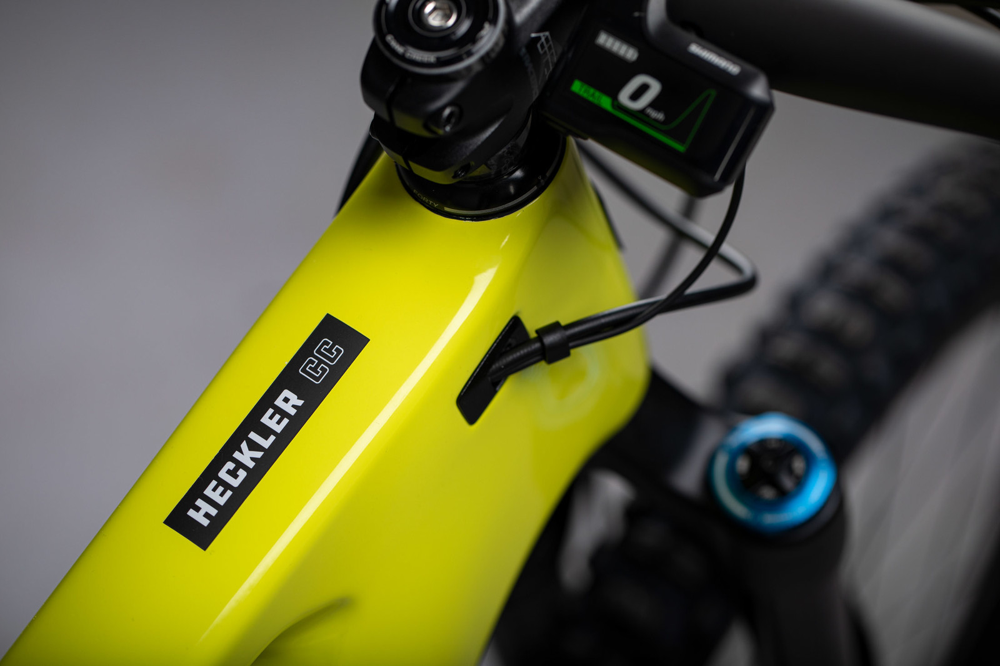
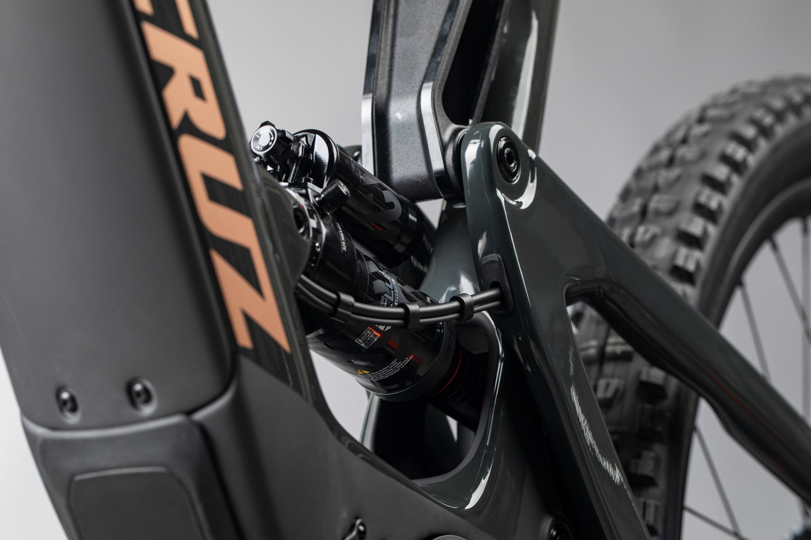
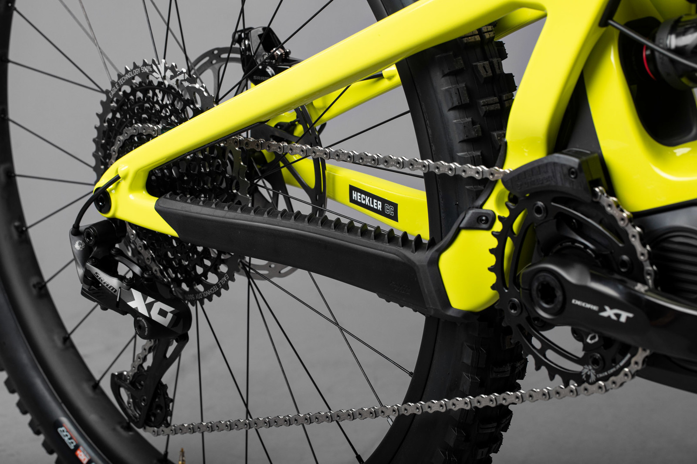

Shimanov motor i integrirana baterija od 500 wh smanjuju težinu.

Potpuni CC karbonski okvir (prednji i stražnji trokut) i poklopac baterije lagan je i otporan na bombe.

VPP dizajn s donjim karikom hoda 150 mm najfiniji je dizajn ovjesa na bilo kojem e-MTB-u.

Relativno opušteni kut glave (65,5 stupnjeva) i duljina lanca od 445 mm pružaju brz i zabavan osjećaj.